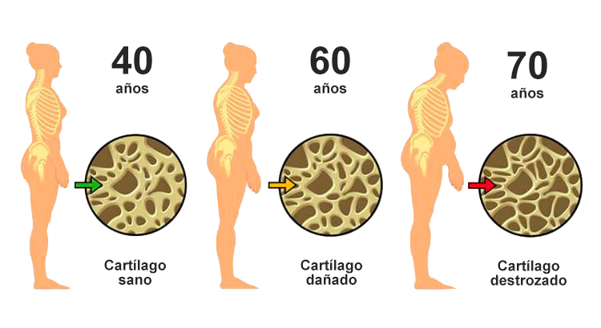
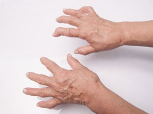
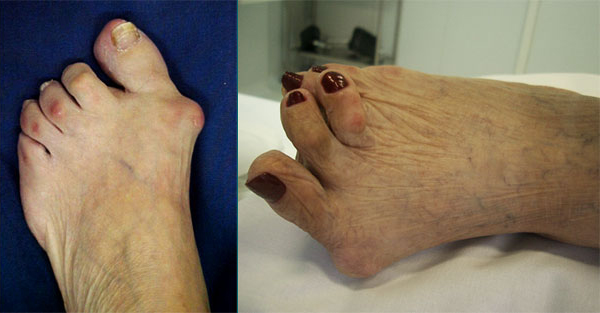
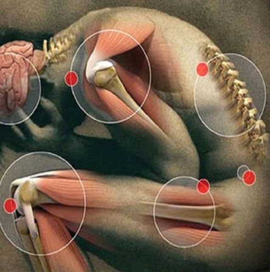
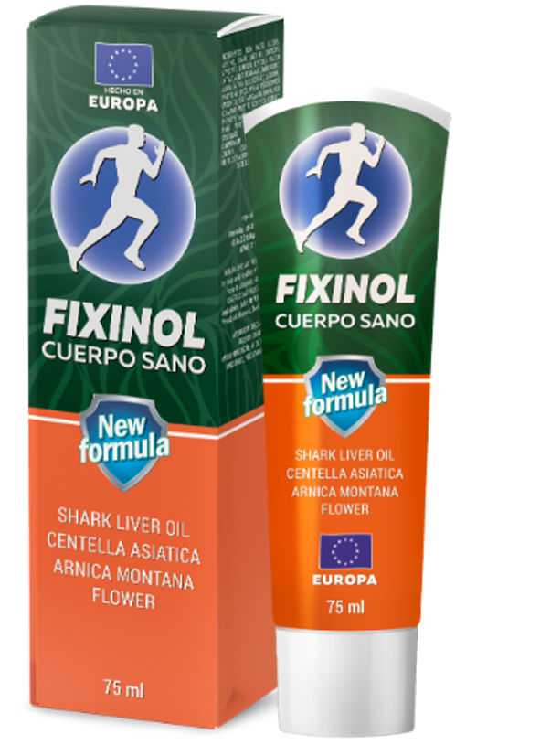

Los dolores articulares afectan profundamente la vida de las personas, pero según el Dr. Drauzio Varella se pueden resolver de una manera extremadamente simple.
Vea el reportaje que se emitió el domingo pasado en el Fantástico:
Tengo muchos años de experiencia y puedo asegurarles que la mayoría de los problemas articulares e incluso óseos están relacionados con la destrucción del tejido del cartílago y no con la falta de calcio o magnesio, como cree la mayoría de la gente.
Cuando se trata de huesos, ¿cuáles son las principales quejas de los pacientes del Dr. Drauzio?
En la gran mayoría de los casos, las quejas son de dolor articular, que comienzan desde un dolor leve y moderado hasta el dolor realmente incapacitante. La mayoria de estos pacientes pasan años buscando una solución de su dolor, que solo empeora. Desafortunadamente, no tienen a mano un producto tan efectivo como la crema .
Por lo general, intentan infructuosamente utilizar sustancias, como la condroitina y la glucosamina, pero la más eficaz es la combinación de componentes que funcionan con hierbas medicinales y aceite de hígado de tiburón, porque son fácilmente absorbidos por la piel y actúan internamente.Solamente estos componentes especiales penetran rápidamente en el cartílago y comienzan el proceso de regeneración ...
En muchos casos, vemos una destrucción obvia de las articulaciones debido a la combinación de componentes seleccionados incorrectamente, sin los cuales el calcio y otros elementos simplemente no absorben y no llegan a las articulaciones, lo que solo agrava aún más el problema.
Es bastante común ver atrofias como las de Noelia Montes. La buena noticia es que estos problemas son completamente reversibles con el complejo de hierbas adecuado y aceite de hígado de tiburón. Lo principal es usar este producto regularmente durante un tiempo prolongado (4-5 semanas )
Arriba está la imagen del pie de Doña Noelia Montes, quien fue la protagonista del programa. Durante mucho tiempo no pudo resolver los problemas existentes con las articulaciones, y aquí está el resultado.
¿El uso de hierbas medicinales populares ayuda? ¿Puedes contar más sobre esto?
De hecho, estas no son solo hierbas sobre las que puede leer en Internet. Si todo fuera así de simple, no habría ningún problema en las articulaciones. La dificultad radica en el hecho de que es necesario elegir el complejo de sustancias activas adecuado, liderado por el ingrediente clave, que mantendrá todas las propiedades curativas de las hierbas en un solo conjunto.
Por lo tanto, es importante que los profesionales participen en la selección de todos los componentes medicinales. Solo en este caso puede estar seguro de que está utilizando un producto probado de alta calidad con eficacia probada. El resultado será una regeneración intensiva de los tejidos articulares y la eliminación completa del dolor. El principal componente medicinal de la crema es el aceite de hígado de tiburón. Este es un producto biológicamente activo y único que contiene muchos compuestos útiles, vitaminas y oligoelementos: escualeno, escualamina, ácidos grasos poliinsaturados, etc.
Sólo el aceite de hígado de tiburón es capaz combinar todas las propiedades curativas de las hierbas, gracias a lo cual la fórmula de la crema ganó un poderoso efecto curativo para las articulaciones. Es por eso que declaro con confianza: el uso regular de durante un periodo recomendado restaurará naturalmente el cartílago dañado, eliminará toda la incomodidad y devolverá la movilidad de las articulaciones como en la juventud.
¿Cómo se recupera el paciente? ¿Puede hablarnos de esto, Dr. Drauzio?
La mayoría de los casos muestran una recuperación muy similar, los pacientes que llegan con mucho dolor, algunos incluso con problemas de movilidad, mejoran día tras día con el uso de .
En los casos más graves (pacientes que ya tienen problemas de movilidad) después de unos 10-14 días, los pacientes experimentan una mejora significativa en el estado de las articulaciones. En promedio, después de 2 semanas, ya pueden realizar tareas simples en la casa e incluso salir a caminar un poco.

Y después de 4-5 semanas de tratamiento, ocurren las mejoras más significativas. Incluso en casos de artritis severa, los pacientes regresan a una vida absolutamente normal, pueden volver a practicar deportes, viajar y en general, hacer lo que quieran, sin dolor ni otros síntomas desagradables. ¡Las articulaciones quedan completamente regeneradas!
→ Vea los opiniones de personas que han transformado sus vidas gracias a
¿Cómo llegó a la conclusión de que ayudará a sus pacientes?

Como ya sabe soy cancerólogo, por lo que la mayoría de mis pacientes son personas mayores, para muchos de mis pacientes la práctica de actividad física como caminar es fundamental en su recuperación.
Fue precisamente allí donde me vi obligado a buscar la solución contra el dolor articular lo antes posible, ya que fue por eso que la mayoria de mis paciemtes no salían a las caminatas precisamente porque el dolor no lo permitía.
Para mantener las articulaciones sanas, debe adoptar un enfoque integral para su tratamiento y saber exactamente lo que necesitan. Hoy, la crema esla elección ideal de componentes necesarios para la salud de las articulaciones. Su fórmula única no tiene analogos en el mercado. La crema está enriquecida con hierbas y extractos seleccionados correctamente, gracias a los cuales se absorbe instantáneamente en la piel, llega a la zona afectada y tiene un efecto terapéutico (regenerativo) específico en el menor tiempo posible.
Suena muy prometedor. Cuéntanos más sobre la crema .
Sí, ahora te diré qué es exactamente lo que me llama la atención en este producto. Nombraré los ingredientes claves de , y comprenderá por qué digo con confianza que esta crema es el mejor remedio para la salud de las articulaciones:
- Aceite de hígado de tiburón
- Extracto de centella asiática
- Extracto de flor de árnica montaña
- Condroitina
- Glucosamina
Desafortunadamente, la mayoría de estos ingredientes no se venden en México, y esta es una de las razones de los muchos problemas conjuntos entre los mexicanos. Es genial que ahora todos los residentes del país puedan usar la crema , porque contiene una gama completa de nutrientes que estimulan la regeneración intensiva del cartílago dañado.
Gracias a su fórmula única, combate eficazmente cualquier enfermedad articular:
- artritis;
- artrosis;
- coxartrosis;
- osteoartritis;
- osteocondrosis;
- osteocondritis;
- osteoporosis;
- lesión de menisco;
- gonartrosis.

¡Esto es increíble! ¿ es un medicamento? ¿Existe algún riesgo de usarlo?
No, no es un medicamento y no tiene efectos secundarios. No hemos recibido comentarios negativos de los clientes. Además, esta crema no tiene restricciones en su uso, está aprobada para su venta por ANVISA, ya que es absolutamente segura y muy efectiva.
Como sabes, soy fan de los tratamientos naturales. Creo que son mucho mejores para nuestra salud, porque a diferencia de muchas terapias tradicionales, no son agresivas.
Por supuesto, hay casos en los que no hay otra forma de tratamiento que no sea con los medicamentos, pero siempre que sea posible recomiendo que el tratamiento sea lo más natural posible, como usar (que es 100% natural) para tratar el dolor en las articulaciones.
 
¿Dónde puedo comprar ?
Desafortunadamente, todavía no es posible comprarlo en farmacias. Allí dominan las grandes cadenas minoristas y la disposicion de productos naturales es mínima.
Además, venden sus productos a precios muy elevados. Y estos medicamentos a veses tienen efectos secundarios terribles.
La buena noticia es que ahora la crema se puede pedir con un 50% de descuento y con la compra del tratamiento completo, la entrega es gratuita.
(¡Y recíbelo en casa de forma segura en menos de 7 días con garantía de satisfacción!)
 Alba escribe:
Alba escribe:
 Laura escribe:
Laura escribe:
 Mariela escribe:
Mariela escribe: